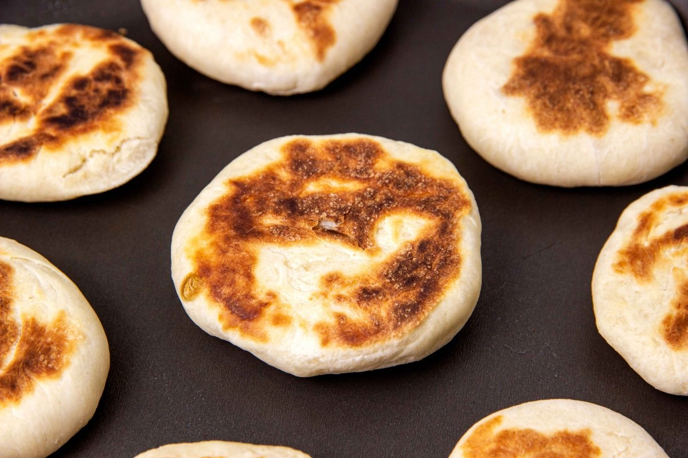

Arepa de Trigo
Icono culinario de los Andes Tachirenses
Descripción
La arepa de trigo es un elemento central e insustituible en las mesas andinas. A diferencia de la variante tradicional de maíz, destaca por su textura sumamente suave, ligera consistencia esponjosa y un aroma reconfortante, siendo la compañía idónea para una pizca andina caliente o queso ahumado de la región.
Ingredientes
Preparación Paso a Paso
Mezcla inicial: En un recipiente amplio o sobre una mesa limpia, tamiza la harina de trigo y forma un volcán. En el centro agrega el huevo, la cucharada de mantequilla, la pizca de sal y el toque de azúcar.
Amasado continuo: Incorpora el líquido tibio progresivamente mientras integras con los dedos. Amasa vigorosamente durante 8-10 minutos hasta lograr un bollo liso, elástico y que no se adhiera a tus manos.
Reposo: Cubre la masa con un paño de cocina limpio y déjala reposar en un espacio cálido por unos 15 minutos para que el gluten se relaje y la arepa quede mucho más suave.
Formado y cocción: Divide la masa en porciones iguales, haz esferas y aplánalas uniformemente con la palma de la mano o un rodillo. Cocínalas en un budare o sartén caliente a fuego medio hasta que doren por ambos lados.